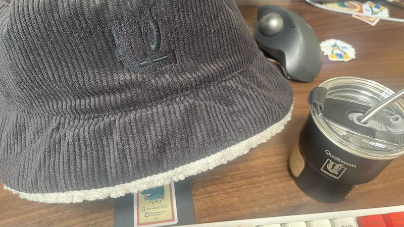

October 11, 2026
Back from LPC26: One RVA23U64 Bit, Four Asks, and a Penguin Hat
Why the Linux kernel should answer “is this machine RVA23?” with one bit, how the rva23u64
hwprobe series got to v8 and what it moved along the way, the four asks I brought to the
LPC26 RISC-V Microconference in Prague, and what came back.